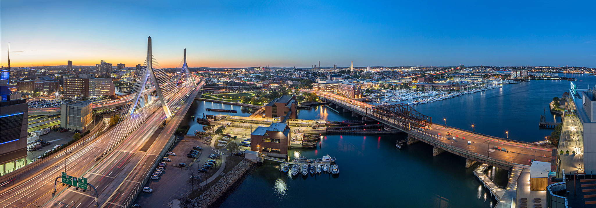

-
Related Beal
Beal, the Boston office of Related Companies, is a fully integrated real firm focused on development and investment opportunities in Boston and surrounding region. Related Beal leverages a national real estate platform with expertise across all assets classes and storied local experience in life sciences, commercial and residential development, property management and real estate investments. Related Beal has developed or is in the process of developing some the most recognized buildings in the area including The Clarendon and One Bay, The Arlington, Lovejoy Wharf, Congress Square and Converse’s headquarters. -
Robert A.M. Stern Architects
Beal, the Boston office of Related Companies, is a fully integrated real firm focused on development and investment opportunities in Boston and surrounding region. Related Beal leverages a national real estate platform with expertise across all assets classes and storied local experience in life sciences, commercial and residential development, property management and real estate investments. Related Beal has developed or is in the process of developing some the most recognized buildings in the area including The Clarendon and One Bay, The Arlington, Lovejoy Wharf, Congress Square and Converse’s headquarters. -
Stantec – Executive Architect
Beal, the Boston office of Related Companies, is a fully integrated real firm focused on development and investment opportunities in Boston and surrounding region. Related Beal leverages a national real estate platform with expertise across all assets classes and storied local experience in life sciences, commercial and residential development, property management and real estate investments. Related Beal has developed or is in the process of developing some the most recognized buildings in the area including The Clarendon and One Bay, The Arlington, Lovejoy Wharf, Congress Square and Converse’s headquarters. -
H.M White – Landscape Architects
Beal, the Boston office of Related Companies, is a fully integrated real firm focused on development and investment opportunities in Boston and surrounding region. Related Beal leverages a national real estate platform with expertise across all assets classes and storied local experience in life sciences, commercial and residential development, property management and real estate investments. Related Beal has developed or is in the process of developing some the most recognized buildings in the area including The Clarendon and One Bay, The Arlington, Lovejoy Wharf, Congress Square and Converse’s headquarters. 
-
Copley Wolff Design Group – Landscape Architects
Beal, the Boston office of Related Companies, is a fully integrated real firm focused on development and investment opportunities in Boston and surrounding region. Related Beal leverages a national real estate platform with expertise across all assets classes and storied local experience in life sciences, commercial and residential development, property management and real estate investments. Related Beal has developed or is in the process of developing some the most recognized buildings in the area including The Clarendon and One Bay, The Arlington, Lovejoy Wharf, Congress Square and Converse’s headquarters. -
Luxury Attaché – Concierge
Beal, the Boston office of Related Companies, is a fully integrated real firm focused on development and investment opportunities in Boston and surrounding region. Related Beal leverages a national real estate platform with expertise across all assets classes and storied local experience in life sciences, commercial and residential development, property management and real estate investments. Related Beal has developed or is in the process of developing some the most recognized buildings in the area including The Clarendon and One Bay, The Arlington, Lovejoy Wharf, Congress Square and Converse’s headquarters.